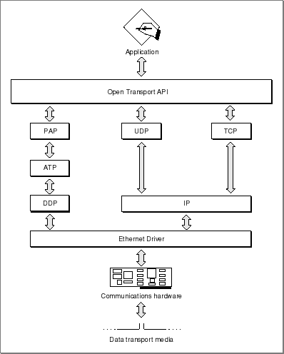
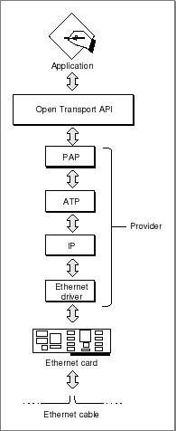
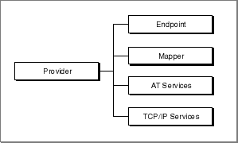

About Networking With Open Transport
Networking on the Mac OS is implemented through the Open Transport system software. The Open Transport software provides an API that gives you access to the services of the various protocols. The functions you use depend not on the specific protocol you want to use, but on whether the protocol is connection-oriented or connectionless, and whether it is transaction-based or transactionless.This section describes the architecture of Open Transport and discusses some basic Open Transport features and concepts.
Open Transport Architecture
The Open Transport system software consists of a set of application interface and utility routines (known collectively as the Open Transport API), a set of software modules that implement networking protocols and other services, and hardware drivers. Below the hardware drivers are networking and communications hardware: cards, cables, and built-in ports. These components are illustrated in Figure 1-2 and discussed further in the following sections.Figure 1-2 The basic architecture of Open Transport

Open Transport API
The Open Transport API consists of two types of functions: utility functions, which are implemented by Open Transport iself; and interface functions, which Open Transport passes through to the underlying software modules. Because the interface functions are implemented by the software modules, the same function might operate somewhat differently depending on the specific modules that execute it. Where such dependencies exist, they are described in the chapter describing a particular protocol.The Open Transport API is a superset of a standard API defined by the X/Open Company, Ltd. The X/Open API is called the X/Open Transport Interface, or XTI. Both XTI and Open Transport are designed to be independent of the underlying data transport provider; for example, you use the same functions to send a packet of data whether the packet is being transferred by DDP over an AppleTalk network or IP over Ethernet. However, whereas XTI specifies functions only for connectionless and connection-oriented protocols, Open Transport also includes functions for transaction-based protocols.
The set of functions you use and the sequence of functions you call depends on the operation you want to perform and whether the protocol you want to use is connectionless or connection-oriented, transactionless or transaction-based.
In accordance with XTI, the Open Transport API supports protocol options. An option is a value of interest to a specific protocol. For example, an option might enable or disable checksums or specify the priority of a datagram. The available options and their significance are defined by each implementation of each protocol. Every option has a default value, and you can almost always use the default values and not specify any options. It is important to note that, because each option is protocol dependent, specifying a nondefault value for an option decreases or eliminates the transport independence of your application. Protocol options are described throughout this book with the protocol to which they apply. Option handling is described in "Option Management" in this book.
The XTI specification defines a number of asynchronous events that indicate occurrences such as the arrival of data. Open Transport includes all the standard events defined by XTI, additional asynchronous events, plus completion events that individual functions issue when they complete asynchronous execution. You can poll for asynchronous events, but you cannot poll for completion events. The preferred method for handling all Open Transport events is to write an event-handling callback function, called a notifier function. Open Transport event handling and notifier functions are described in detail in the chapter "Providers" in this book.
Software Modules
The software modules shown in Figure 1-2 are implemented as STREAMS modules. The STREAMS architecture is a UNIX® standard in which protocols (and other service providers) are implemented as software modules that communicate between each other using messages. Open Transport conforms to the Transport Provider Interface (TPI) and Data Link Provider Interface (DLPI) standards, which describe the content and ordering of the messages between modules. In a STREAMS environment, all modules have the following attributes:Figure 1-2 shows the AppleTalk implementation of the actual STREAMS architecture.
- They process messages asynchronously. One module can send a message to another module and then receive the reply as a message, all without interfering with any other system activity.
- All the Open Transport STREAMS modules share a single address space.
- They may never block; that is, if a module can't complete an operation, it must return with an error rather than indefinitely holding up processing.
You can write your own STREAMS modules to work with Open Transport. The Open Transport TCP/IP software modules are based on the UNIX STREAMS standard. This book does not cover STREAMS or writing a STREAMS modules. For more information about STREAMS, see UNIX System V Release 4: Programmer's Guide: STREAMS and the Open Transport Module Devloper's SDK.
Drivers and Hardware
The Open Transport STREAMS modules communicate with hardware drivers, which in turn control the flow of data through communications cards or built-in ports. Normally, the user selects which card or port to use through the Open Transport control panels. Your application can use the default port for a particular protocol or, in some cases, you can configure Open Transport to use a specific port.Open Transport supports multihoming; that is, an individual node can have more than one hardware device (ports or cards) for a given type of transport. In the current version, multihoming is supported only with AppleTalk protocols.
Open Transport and Interrupt-Time Processing
Open Transport places severe limitations on functions that can be called at hardware interrupt time and imposes some restrictions on functions that can be called at secondary interrupt time. For a discussion of interrupt-time processing, see "Interrupt-Time Processing". For more detailed information, see "Programming With Open Transport".Providers: Endpoints, Mappers, and Services
The concept of a provider is central to an understanding of Open Transport. A provider is a set of software modules and drivers that provides a service to clients of Open Transport. For example, when you open an ADSP connection, Open Transport logically links a set of AppleTalk software modules, a communications driver, and a card or port to create what is known as an ADSP endpoint provider. The Open Transport includes functions for three types of providers:You use an endpoint provider to send and receive information over a data link. Figure 1-3 illustrates an ASP endpoint provider.
- endpoint providers
- mapper providers
- service providers
Figure 1-3 An Open Transport Provider

In order to use an endpoint provider, you must first configure and open an endpoint. An endpoint consists of a set of data structures, maintained by Open Transport, that specify the components of the endpoint provider and the manner in which that provider is to operate (blocking or nonblocking, synchronous or asynchronous, and so forth). An endpoint also maintains state information and other information that Open Transport needs in order to operate that provider.
The Open Transport endpoint functions provide an application programming interface (API) to endpoint providers. When you configure an Open Transport endpoint, you specify which protocol or set of protocols the provider is to use; the highest-level protocol you specify for the endpoint provider determines whether the transport mechanism is connectionless or connection-oriented, and whether it is transactionless or transaction-based. For example, if you specify ADSP as the highest-level protocol in the endpoint provider, the transport is connection-oriented and transactionless.
See "Endpoints and Protocol Layering" for more information on the configuration of endpoint providers.
Mapper providers implement a standard interface for dealing with addresses. In order to receive data over a network, a process must have a network address. Whereas an address is typically a number of significance to the network software, it is much easier for people using the network to refer to each addressable entity by some name. Consequently, most networks include some naming scheme and a facility that converts between names and addresses. For example, a process using an AppleTalk network must register its name on the network using the Name-Binding Protocol (NBP), which it accesses through a mapper provider.
You use a mapper provider to relate network addresses to network node names and to register and remove node names for networks that support this ability. To use a mapper provider, you must configure and open a mapper, a set of data structures that store information about the mapper provider for use by Open Transport.
You use service providers to handle features unique to a specific type of Open Transport service. For example, because the concept of zones is not common to all protocol families, the AppleTalk service provider API includes functions that deal with AppleTalk zones. Similarly, the TCP/IP Domain Service Resolver (DNR) provides some services specific to the TCP/IP protocol family. Consequently, the TCP/IP service provider functions provide an interface to the DNR.
Each provider supports some subset of the standard Open Transport functions, depending on the nature of that provider; for example, an endpoint provider implements different functions than a mapper provider. What's more, a connection-oriented transactionless endpoint provider implements different functions than a connectionless transaction-based endpoint provider.
Some Open Transport functions are common to all providers. These allow you to open or close a provider, to determine whether a provider executes functions synchronously or asynchronously, to issue a command directly to a STREAMS module underlying a provider, and so on.
When you open an endpoint, mapper, or service provider, the open function returns a provider reference, analogous to the file reference you get from the File Manager when you open a file. You must specify that provider reference whenever you want to execute a function related to that endpoint, mapper, or service. For example, to send data, you specify the provider reference for the endpoint you want to use.
Figure 1-4 shows the hierarchical relationship among Open Transport providers. The C++ API provides classes that mirror this object-oriented hierarchy.
Figure 1-4 Hierarchy of Open Transport providers

Transport Independence
In contrast to earlier Mac OS application programming interfaces (APIs) for AppleTalk and TCP/IP, in which each protocol had a separate and unique set of routines, Open Transport provides a single set of functions that you can use with any protocol or protocol family. The type of endpoint you open (connectionless or connection-oriented, and transactionless or transaction-based) determines which functions you call to send and receive data, independent of the specific protocol or protocol family you use.For example, if you open a connectionless, transactionless endpoint, you use the
OTSndUDatafunction to send data. You use this function whether you are using DDP, IP, or UDP. If you open a connection-oriented, transactionless endpoint, on the other hand, you first establish a connection using theOTConnectandOTRcvConnectfunctions, and then use theOTSndfunction to send data. You use these same functions whether you are using TCP, ADSP, or any other Open Transport connection-oriented, transactionless protocol.Although transport independence means that you can use the same API regardless of the protocol or communcations hardware you want to use, it does not free you from all knowledge of the transport type. When you open an endpoint, you must specify the highest-level protocol in the endpoint provider, and you must call the functions appropriate to the type of that protocol. For example, although your application can use the same set of functions to send data through either an ADSP or a TCP connection (that is, functions for a connection-based transactionless protocol), you must specify which of these protocols you want to use use when you open the endpoint.
You can customize most Open Transport protocols by the specification of option values. Because options are both protocol dependent and implementation dependent, the use of any option values other than the defaults makes your code less transport independent. Unless you have a compelling reason to change an option value, don't specify any options. You can almost always use the default values provided by Open Transport.
Addressing schemes are also protocol-dependent; in order to use specific protocols, you will need to understand these schemes and to use the appropriate protocol-dependent data structure and functions.
Endpoints and Protocol Layering
When you configure an Open Transport endpoint, you specify the highest-level protocol to be used by that endpoint provider. Optionally, you can specify other protocols and ports to be included in the endpoint provider. For example, if you specify only ADSP, Open Transport uses the default underlying protocol for ADSP, which is DDP, over the default AppleTalk port. However, you can specify that ADSP is to use a specific Ethernet card as the port.Because the type of endpoint you open depends only on the highest-level protocol in the endpoint provider, protocol layering does not affect the transport independence of Open Transport. That is, you use the same functions to open and maintain a connection and to send messages whether you are using ADSP over DDP through Ethernet, or TCP over IP through token ring.
Subtopics
- Open Transport Architecture
- Open Transport API
- Software Modules
- Drivers and Hardware
- Open Transport and Interrupt-Time Processing
- Providers: Endpoints, Mappers, and Services
- Transport Independence
- Endpoints and Protocol Layering